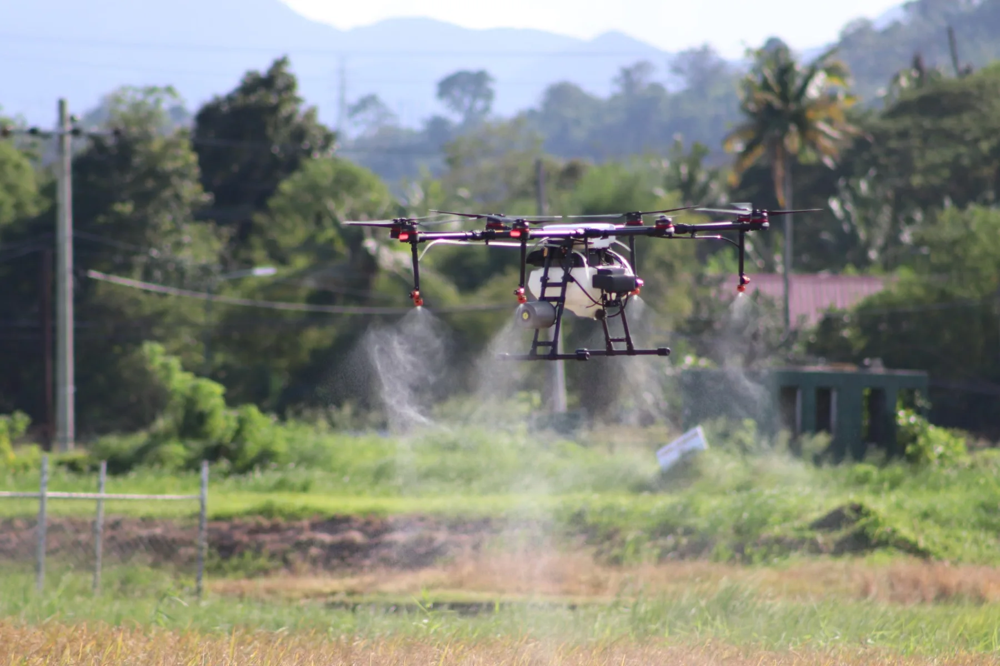

Agricultural drone operations
For farms and LGU agricultural programs.
Drone operations for crop application, field work, monitoring, and farm mapping.
- Crop spraying and application
- Seeding and granular spreading
- Crop monitoring, multispectral and NDVI imaging
- Farm mapping
